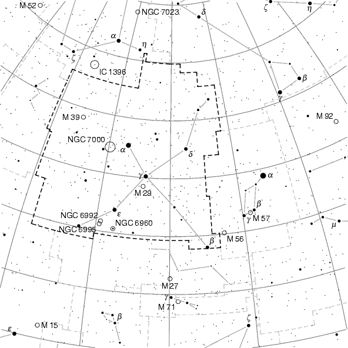

Node: More bells and wistles, Next: Dimensions and scale, Previous: Minimal example, Up: Input scripts
Let's continue with our Swan example of the previous section.
Normally the Milky Way is switched off, because it consumes a lot of memory, see Increase TeX's memory. However it looks rather nice, so let's switch it on:
switch milky_way on
Maybe you want to use the map in a book that is supposed to be printed in black and white. Then the current colour scheme is disadvantageous. The following lines redefine it:
color nebulae 0 0 0
color background 1 1 1
color grid 0.5 0.5 0.5
color ecliptic 0.3 0.3 0.3
color constellation_lines 0.7 0.7 0.7
color labels 0 0 0
color boundaries 0.8 0.8 0.8
color highlighted_boundaries 0 0 0
color milky_way 0.5 0.5 0.5
Colours are given as red–green–blue values, for further information see Colours. With these redefinitions, all elements on the map are printed either in black or in shades of grey.
A special problem are stars. With
color stars 0 0 0
stars are printed in black colour, one could think. But this is not
always true. By default, stars get their `real' colour according to
their B-V brightness. For example, Saiph in Orion is a little
bit blue, while Antares in Scorpius is known to be red. Therefore
PP3 ignores any `color' directive for stars, unless you
also say
switch colored_stars off
Last but not least you should change the highlighted constellation. By default, it's Orion. But we want to highlight the Swan, so we say
set constellation CYG
because “Cyg” is the astronomical abbreviation of the Swan (“Cygnus” in Latin). Highlighting means that its borderline gets another colour.
This is the map that results from all this (I removed the Milky Way from this figure in order to keep the PDF manual small):
